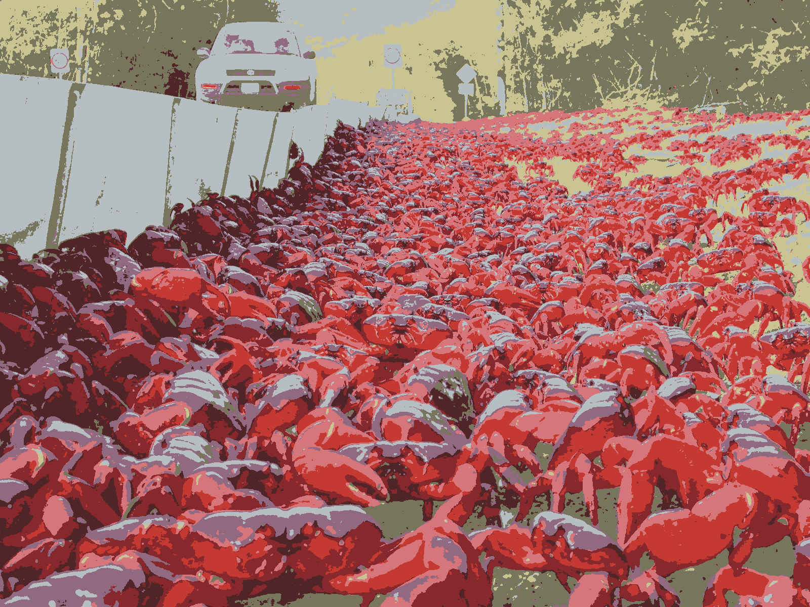

<!DOCTYPE html>
<html lang="en-us">
<head>
  <title>2021/day07.nim</title>
  <link rel="icon" href="data:image/svg+xml,<svg xmlns=%22http://www.w3.org/2000/svg%22 viewBox=%220 0 100 100%22><text y=%22.9em%22 font-size=%2280%22>🐳</text></svg>">
  <meta content="text/html; charset=utf-8" http-equiv="content-type">
  <meta content="width=device-width, initial-scale=1" name="viewport">
  <link rel='stylesheet' href='https://unpkg.com/normalize.css/'>
  <link rel="stylesheet" href="https://cdn.jsdelivr.net/gh/kognise/water.css@latest/dist/dark.min.css">
  <link rel='stylesheet' href='https://cdn.jsdelivr.net/gh/pietroppeter/nimib/assets/androidstudio.css'>
  <style>
.nb-box {
  display: flex;
  align-items: center;
  justify-content: space-between;
}
.nb-small {
  font-size: 0.8rem;
}
button.nb-small {
  float: right;
  padding: 2px;
  padding-right: 5px;
  padding-left: 5px;
}
section#source {
  display:none
}
</style>
  
  <script async defer data-domain="pietroppeter.github.io/adventofnim" src="https://plausible.io/js/plausible.js"></script>
  <style>
    a {
        text-decoration: none;
        color: #009900;
    }
  
    a:hover {
        color: #99ff99;
    }
  
    em {
        color: #ffffff;
        font-style: normal;
        text-shadow: 0 0 5px #ffffff;
    }
  
    em.star {
      font-style: normal;
      color: #ffff66;
      text-shadow: 0 0 5px #ffff66;
    }
  </style>
</head>
<body>
<header>
<div class="nb-box">
  <span><a href="..">🏡</a></span>
  <span><code>2021/day07.nim</code></span>
  <span><a href="https://github.com/pietroppeter/adventofnim"><svg aria-hidden="true" width="1.2em" height="1.2em" style="vertical-align: middle; fill: #fff" preserveAspectRatio="xMidYMid meet" viewBox="0 0 16 16"><path fill-rule="evenodd" d="M8 0C3.58 0 0 3.58 0 8c0 3.54 2.29 6.53 5.47 7.59.4.07.55-.17.55-.38 0-.19-.01-.82-.01-1.49-2.01.37-2.53-.49-2.69-.94-.09-.23-.48-.94-.82-1.13-.28-.15-.68-.52-.01-.53.63-.01 1.08.58 1.23.82.72 1.21 1.87.87 2.33.66.07-.52.28-.87.51-1.07-1.78-.2-3.64-.89-3.64-3.95 0-.87.31-1.59.82-2.15-.08-.2-.36-1.02.08-2.12 0 0 .67-.21 2.2.82.64-.18 1.32-.27 2-.27.68 0 1.36.09 2 .27 1.53-1.04 2.2-.82 2.2-.82.44 1.1.16 1.92.08 2.12.51.56.82 1.27.82 2.15 0 3.07-1.87 3.75-3.65 3.95.29.25.54.73.54 1.48 0 1.07-.01 1.93-.01 2.2 0 .21.15.46.55.38A8.013 8.013 0 0016 8c0-4.42-3.58-8-8-8z"></path></svg></a></span>
</div>
<hr>
</header><main>
<h2>Day 7: <a href="https://adventofcode.com/2021/day/7">The Treachery of Whales</a></h2>
<p>Today was easier then past days and there is not much to
comment on puzzle solution. I did instead break my head to try and
get out a decent animation using <a href="https://github.com/EriKWDev/nanim">nanim</a> and I was able to
come out with something uing a celebrated technique in programming:
the <em>accumulation of wrong fixes</em>! More on that below.</p>
<h3>Part 1</h3>
<p><code>minIndex</code> is returned as part of result to use it for visualization.</p>
<pre><code class="nim hljs"><span class="hljs-keyword">let</span>
  puzzleInput = readFile(<span class="hljs-string">&quot;2021/input07.txt&quot;</span>).strip.split(<span class="hljs-string">','</span>).map(parseInt)
  testInput = @[<span class="hljs-number">16</span>,<span class="hljs-number">1</span>,<span class="hljs-number">2</span>,<span class="hljs-number">0</span>,<span class="hljs-number">4</span>,<span class="hljs-number">2</span>,<span class="hljs-number">7</span>,<span class="hljs-number">1</span>,<span class="hljs-number">2</span>,<span class="hljs-number">14</span>]

<span class="hljs-keyword">echo</span> len(puzzleInput)
<span class="hljs-keyword">echo</span> min(puzzleInput)
<span class="hljs-keyword">echo</span> max(puzzleInput)</code></pre>
<pre><samp>1000
0
1937
</samp></pre>
<pre><code class="nim hljs"><span class="hljs-comment"># assume min = 0</span>
<span class="hljs-keyword">func</span> cost(crab: <span class="hljs-built_in">int</span>, max: <span class="hljs-built_in">int</span>): <span class="hljs-built_in">seq</span>[<span class="hljs-built_in">int</span>] =
  <span class="hljs-literal">result</span> = newSeqWith(len=max + <span class="hljs-number">1</span>): <span class="hljs-number">0</span>
  <span class="hljs-keyword">for</span> i <span class="hljs-keyword">in</span> <span class="hljs-number">0</span> .. <span class="hljs-literal">result</span>.<span class="hljs-keyword">high</span>:
    <span class="hljs-literal">result</span>[i] = abs(crab - i)

<span class="hljs-keyword">func</span> cost(crabs: <span class="hljs-built_in">seq</span>[<span class="hljs-built_in">int</span>]): <span class="hljs-built_in">seq</span>[<span class="hljs-built_in">int</span>] =
  <span class="hljs-keyword">let</span> max = max(crabs)
  <span class="hljs-literal">result</span> = newSeqWith(len=max + <span class="hljs-number">1</span>): <span class="hljs-number">0</span>
  <span class="hljs-keyword">for</span> crab <span class="hljs-keyword">in</span> crabs:
    <span class="hljs-keyword">for</span> i, c <span class="hljs-keyword">in</span> cost(crab, max):
      <span class="hljs-literal">result</span>[i] += c

<span class="hljs-keyword">func</span> part1(crabs: <span class="hljs-built_in">seq</span>[<span class="hljs-built_in">int</span>]): (<span class="hljs-built_in">int</span>, <span class="hljs-built_in">int</span>) =
  <span class="hljs-keyword">let</span> c = cost(crabs)
  (min(c), minIndex(c))

<span class="hljs-keyword">let</span>
  testResult = part1(testInput)
  puzzleResult = part1(puzzleInput)
<span class="hljs-keyword">echo</span> <span class="hljs-string">&quot;part1(test): &quot;</span>, $testResult[<span class="hljs-number">0</span>]
<span class="hljs-keyword">echo</span> <span class="hljs-string">&quot;part1(puzzle): &quot;</span>, $puzzleResult[<span class="hljs-number">0</span>]</code></pre>
<pre><samp>part1(test): 37
part1(puzzle): 339321
</samp></pre>
<blockquote>
<p>That's the right answer! You are <em class="star">one gold star</em> closer to saving your vacation.</p>
</blockquote>
<h3>Part 2</h3>
<p>Same as above but the single cost function for the crab is not aboslute value
but you need to remember Gauss's formula to sum up first n numbers. On that matter
I remember reading (possibly in Bühler's Biography) that the famous task by the teacher
was not about first 100 number but to sum the 100 numbers after a big number (e.g. 4097).
I cannot find any reference to this unfotunately.</p>
<pre><code class="nim hljs"><span class="hljs-keyword">func</span> cost2(crab: <span class="hljs-built_in">int</span>, max: <span class="hljs-built_in">int</span>): <span class="hljs-built_in">seq</span>[<span class="hljs-built_in">int</span>] =
  <span class="hljs-literal">result</span> = newSeqWith(len=max + <span class="hljs-number">1</span>): <span class="hljs-number">0</span>
  <span class="hljs-keyword">for</span> i <span class="hljs-keyword">in</span> <span class="hljs-number">0</span> .. <span class="hljs-literal">result</span>.<span class="hljs-keyword">high</span>:
    <span class="hljs-keyword">let</span> n = abs(crab - i)
    <span class="hljs-literal">result</span>[i] = n * (n + <span class="hljs-number">1</span>) <span class="hljs-keyword">div</span> <span class="hljs-number">2</span> 

<span class="hljs-keyword">func</span> cost2(crabs: <span class="hljs-built_in">seq</span>[<span class="hljs-built_in">int</span>]): <span class="hljs-built_in">seq</span>[<span class="hljs-built_in">int</span>] =
  <span class="hljs-keyword">let</span> max = max(crabs)
  <span class="hljs-literal">result</span> = newSeqWith(len=max + <span class="hljs-number">1</span>): <span class="hljs-number">0</span>
  <span class="hljs-keyword">for</span> crab <span class="hljs-keyword">in</span> crabs:
    <span class="hljs-keyword">for</span> i, c <span class="hljs-keyword">in</span> cost2(crab, max):
      <span class="hljs-literal">result</span>[i] += c

<span class="hljs-keyword">func</span> part2(crabs: <span class="hljs-built_in">seq</span>[<span class="hljs-built_in">int</span>]): (<span class="hljs-built_in">int</span>, <span class="hljs-built_in">int</span>) =
  <span class="hljs-keyword">let</span> c = cost2(crabs)
  (min(c), minIndex(c))

<span class="hljs-keyword">let</span>
  testResult2 = part2(testInput)
  puzzleResult2 = part2(puzzleInput)
<span class="hljs-keyword">echo</span> <span class="hljs-string">&quot;part2(test): &quot;</span>, $testResult2[<span class="hljs-number">0</span>]
<span class="hljs-keyword">echo</span> <span class="hljs-string">&quot;part2(puzzle): &quot;</span>, $puzzleResult2[<span class="hljs-number">0</span>]</code></pre>
<pre><samp>part2(test): 168
part2(puzzle): 95476244
</samp></pre>
<blockquote>
<p>That's the right answer! You are <em class="star">one gold star</em> closer to saving your vacation.</p>
</blockquote>
<h3>Visualization: Crab Dance 🦀🕺</h3>
<p>I will animate the crab dance using <a href="https://github.com/EriKWDev/nanim">nanim</a>, a <a href="https://github.com/3b1b/manim/">manim</a> inspired library to produce animations.</p>
<ul>
<li>I took my time picking <em>colors</em>: rust color is taken from <a href="https://github.com/github/linguist/blob/0afc7507fc995da3f9b73073cc64c719fcd79384/lib/linguist/languages.yml#L5330">languist</a>, crab color
is the result of applying a color quantization technique based on k means clustering
to a picture of [famous red crabs] (and the color quantization <a href="https://github.com/okaneco/kmeans-colors">library</a> is itself in rust);
did you know that on mac there is a nice <a href="https://support.apple.com/guide/digital-color-meter/welcome/mac">Digital Color Meter</a> to find colors used in images?</li>
<li>the way to create a video in nanim relies on command line options. In order to be able to
have a more ergonomic way to generate videos and include them in nimib, I refactored
the rendering apporach of nanim (<a href="https://github.com/EriKWDev/nanim/pull/17">PR pending</a>)</li>
</ul>
<p>All seemed to go well, but I was not able to generate a canvas of the appropriate size
with correct position. It might be a bug (<a href="https://github.com/EriKWDev/nanim/issues/16">Opened Issue</a>), or it might be something fundamental
I am not understanding. Unfortunately this severly impacted my ability to
create my animations. So I decided to solider on and apply (wrong) fixes over (wrong) fixes
in what I am calling the technique of _accumulation of wrong fixes:</p>
<ul>
<li>with a <a href="https://github.com/EriKWDev/nanim/pull/17/commits/9650e0afd83a3f5303b755541bc1201b646c0e06">first wrong fix</a> I was able to align canvas in generated video with the live preview
provided by nanim (but it did not make sense)</li>
<li>then I went on to implement the <code>crabDance</code> procedure below. It is likely that the base implementation
contained bugs, but I fixed them all adding ad-hoc <code>fix</code> factors and hammering out my precioussss animations via trial-and-error!</li>
</ul>
<p>What do the animations show?</p>
<ul>
<li>first animation uses the test input data, it has the crabs for part1 as red squares, and the crabs for part2
as rusty squares. Part 2 is position symmetrically with respect to the vertical axis.</li>
<li>second animation is the same but on real input and with a lot of hand picked fix factors.</li>
</ul>
<p>but first here are the color-quantized crabs:</p>
<p></p>
<pre><code class="nim hljs"><span class="hljs-keyword">import</span> nanim

<span class="hljs-keyword">proc</span> crabDance(startPos: <span class="hljs-built_in">seq</span>[<span class="hljs-built_in">int</span>], endPos: <span class="hljs-built_in">int</span>, endPos2: <span class="hljs-built_in">int</span>,
  scale=<span class="hljs-number">20.0</span>, fixFactor=<span class="hljs-number">4.0</span>, fixLagX=<span class="hljs-number">2</span>, fixLagX2=<span class="hljs-number">0</span>, fixLagY=<span class="hljs-number">1</span>): <span class="hljs-type">Scene</span> =
  <span class="hljs-keyword">let</span>
    colors = colorsFromCoolors(<span class="hljs-string">&quot;https://coolors.co/202b38-009900-ffff66-dea584-b5453a&quot;</span>)
    dark = colors[<span class="hljs-number">0</span>]
    rust = colors[<span class="hljs-number">3</span>]
    crab = colors[<span class="hljs-number">4</span>]

  <span class="hljs-keyword">var</span> scene = newScene() <span class="hljs-comment"># a ref object, let would be also fine</span>
  scene.setBackgroundColor(dark)
  <span class="hljs-comment"># will need to handle a scale for puzzle input</span>
  scene.width = <span class="hljs-built_in">int</span>(max(startPos).<span class="hljs-built_in">float</span>*scale) <span class="hljs-keyword">div</span> <span class="hljs-number">2</span>
  scene.height = <span class="hljs-built_in">int</span>(len(startPos).<span class="hljs-built_in">float</span>*scale) <span class="hljs-keyword">div</span> <span class="hljs-number">2</span>

  <span class="hljs-keyword">for</span> i <span class="hljs-keyword">in</span> <span class="hljs-number">0</span> .. startPos.<span class="hljs-keyword">high</span>:
    <span class="hljs-keyword">let</span> square = newSquare(side=fixFactor*scale, centered=<span class="hljs-literal">false</span>)
    square.fill(crab)
    <span class="hljs-keyword">discard</span> square.move(fixFactor*(startPos[i] - fixLagX).<span class="hljs-built_in">float</span>*scale, fixFactor*(i + fixLagY).<span class="hljs-built_in">float</span>*scale )
    scene.add(square)

    scene.onTrack i:
      scene.wait <span class="hljs-number">500</span>
      scene.play(square.move(fixFactor*(endPos - startPos[i]).<span class="hljs-built_in">float</span>*scale, <span class="hljs-number">0</span>).with(duration=<span class="hljs-number">5000</span>))
      scene.wait <span class="hljs-number">500</span>

    <span class="hljs-keyword">let</span> square2 = newSquare(side=fixFactor*scale, centered=<span class="hljs-literal">false</span>)
    square2.fill(rust)
    <span class="hljs-keyword">discard</span> square2.move(fixFactor*(max(startPos) - startPos[i] - fixLagX - fixLagX2).<span class="hljs-built_in">float</span>*scale, fixFactor*(i + fixLagY).<span class="hljs-built_in">float</span>*scale )
    scene.add(square2)

    scene.onTrack i + len(startPos):
      scene.wait <span class="hljs-number">500</span>
      scene.play(square2.move(fixFactor*(startPos[i] - endPos2).<span class="hljs-built_in">float</span>*scale, <span class="hljs-number">0</span>).with(duration=<span class="hljs-number">5000</span>))
      scene.wait <span class="hljs-number">500</span>

  <span class="hljs-keyword">return</span> scene

render(crabDance(testInput, testResult[<span class="hljs-number">1</span>], testResult2[<span class="hljs-number">1</span>]), <span class="hljs-string">&quot;2021/test_dance.mp4&quot;</span>)</code></pre>
<pre><samp>[Info]: Width: 160, Height: 100 (ratio: 1.60:1.00), FPS: 60.0
[Info]: Launching FFmpeg subprocess with: ffmpeg -y -f rawvideo -pix_fmt rgba -s 320x200 -r 60.0 -i - -vf vflip -an -c:v libx264 -preset medium -profile:v high -crf 17 -coder 1 -tune animation -pix_fmt yuv420p -movflags +faststart -g 30 -bf 2 2021/test_dance.mp4
</samp></pre>
<video controls>
  <source src="../2021/test_dance.mp4" type="video/mp4">
Your browser does not support the video element.
</video>
<pre><code class="nim hljs">render(crabDance(puzzleInput, puzzleResult[<span class="hljs-number">1</span>], puzzleResult[<span class="hljs-number">1</span>], scale=<span class="hljs-number">0.5</span>, fixLagX=<span class="hljs-number">250</span>, fixLagX2=<span class="hljs-number">1000</span>), <span class="hljs-string">&quot;2021/crab_dance.mp4&quot;</span>)</code></pre>
<pre><samp>[Info]: Width: 484, Height: 250 (ratio: 1.94:1.00), FPS: 60.0
[Info]: Launching FFmpeg subprocess with: ffmpeg -y -f rawvideo -pix_fmt rgba -s 968x500 -r 60.0 -i - -vf vflip -an -c:v libx264 -preset medium -profile:v high -crf 17 -coder 1 -tune animation -pix_fmt yuv420p -movflags +faststart -g 30 -bf 2 2021/crab_dance.mp4
</samp></pre>
<video controls>
  <source src="../2021/crab_dance.mp4" type="video/mp4">
Your browser does not support the video element.
</video>
<h3>highlights</h3>
<ul>
<li>the median was the exact solution for part 1 and the mean almost the exact solution for part 2,
see <a href="https://www.reddit.com/r/adventofcode/comments/rawxad/2021_day_7_part_2_i_wrote_a_paper_on_todays/">this</a> (and references therein)</li>
<li>a nice <a href="https://www.reddit.com/r/adventofcode/comments/rau12d/2021_day_7_easter_egg_in_inputs/">easter egg</a> based on intcode</li>
<li>a <a href="https://www.reddit.com/r/adventofcode/comments/rayjaa/2021_day_2_part_2_dart_crabs_together_strong/">comic like</a> visualization and <a href="https://www.reddit.com/r/adventofcode/comments/raw9sg/2021_day_7_crabs_unite/">one that</a> looks like mine</li>
</ul>

</main>
<footer>
<hr>
<div class="nb-box">
  <span><span class="nb-small">made with <a href="https://pietroppeter.github.io/nimib/">nimib 🐳</a></span></span>
  <span></span>
  <span><button class="nb-small" id="show" onclick="toggleSourceDisplay()">Show Source</button></span>
</div>
</footer>
<section id="source">
<pre><code class="nim hljs"><span class="hljs-comment">#[
  - optimal point is for sure inside
  - for 
]#</span>
<span class="hljs-keyword">import</span> animu, nimib
nbInit(theme=useAdventOfNim)

<span class="hljs-comment"># this and nbAudio should end up in nimib!</span>
<span class="hljs-keyword">template</span> nbVideo(mp4url: <span class="hljs-built_in">string</span>) = nbText <span class="hljs-string">&quot;&quot;&quot;
&lt;video controls&gt;
  &lt;source src=&quot;&quot;&quot;&quot;</span> &amp; joinPath(nb.srcDirRel.<span class="hljs-built_in">string</span>, mp4url) &amp; <span class="hljs-string">&quot;&quot;&quot;&quot; type=&quot;video/mp4&quot;&gt;
Your browser does not support the video element.
&lt;/video&gt;
&quot;&quot;&quot;</span>

nbText: <span class="hljs-string">&quot;&quot;&quot;## Day 7: [The Treachery of Whales]
[The Treachery of Whales]: https://adventofcode.com/2021/day/7

Today was easier then past days and there is not much to
comment on puzzle solution. I did instead break my head to try and
get out a decent animation using [nanim] and I was able to
come out with something uing a celebrated technique in programming:
the _accumulation of wrong fixes_! More on that below.

[nanim]: https://github.com/EriKWDev/nanim

### Part 1

`minIndex` is returned as part of result to use it for visualization.
&quot;&quot;&quot;</span>
nbCode:
  <span class="hljs-keyword">let</span>
    puzzleInput = readFile(<span class="hljs-string">&quot;2021/input07.txt&quot;</span>).strip.split(<span class="hljs-string">','</span>).map(parseInt)
    testInput = @[<span class="hljs-number">16</span>,<span class="hljs-number">1</span>,<span class="hljs-number">2</span>,<span class="hljs-number">0</span>,<span class="hljs-number">4</span>,<span class="hljs-number">2</span>,<span class="hljs-number">7</span>,<span class="hljs-number">1</span>,<span class="hljs-number">2</span>,<span class="hljs-number">14</span>]

  <span class="hljs-keyword">echo</span> len(puzzleInput)
  <span class="hljs-keyword">echo</span> min(puzzleInput)
  <span class="hljs-keyword">echo</span> max(puzzleInput)
nbCode:
  <span class="hljs-comment"># assume min = 0</span>
  <span class="hljs-keyword">func</span> cost(crab: <span class="hljs-built_in">int</span>, max: <span class="hljs-built_in">int</span>): <span class="hljs-built_in">seq</span>[<span class="hljs-built_in">int</span>] =
    <span class="hljs-literal">result</span> = newSeqWith(len=max + <span class="hljs-number">1</span>): <span class="hljs-number">0</span>
    <span class="hljs-keyword">for</span> i <span class="hljs-keyword">in</span> <span class="hljs-number">0</span> .. <span class="hljs-literal">result</span>.<span class="hljs-keyword">high</span>:
      <span class="hljs-literal">result</span>[i] = abs(crab - i)

  <span class="hljs-keyword">func</span> cost(crabs: <span class="hljs-built_in">seq</span>[<span class="hljs-built_in">int</span>]): <span class="hljs-built_in">seq</span>[<span class="hljs-built_in">int</span>] =
    <span class="hljs-keyword">let</span> max = max(crabs)
    <span class="hljs-literal">result</span> = newSeqWith(len=max + <span class="hljs-number">1</span>): <span class="hljs-number">0</span>
    <span class="hljs-keyword">for</span> crab <span class="hljs-keyword">in</span> crabs:
      <span class="hljs-keyword">for</span> i, c <span class="hljs-keyword">in</span> cost(crab, max):
        <span class="hljs-literal">result</span>[i] += c

  <span class="hljs-keyword">func</span> part1(crabs: <span class="hljs-built_in">seq</span>[<span class="hljs-built_in">int</span>]): (<span class="hljs-built_in">int</span>, <span class="hljs-built_in">int</span>) =
    <span class="hljs-keyword">let</span> c = cost(crabs)
    (min(c), minIndex(c))

  <span class="hljs-keyword">let</span>
    testResult = part1(testInput)
    puzzleResult = part1(puzzleInput)
  <span class="hljs-keyword">echo</span> <span class="hljs-string">&quot;part1(test): &quot;</span>, $testResult[<span class="hljs-number">0</span>]
  <span class="hljs-keyword">echo</span> <span class="hljs-string">&quot;part1(puzzle): &quot;</span>, $puzzleResult[<span class="hljs-number">0</span>]

gotTheStar

nbText: <span class="hljs-string">&quot;&quot;&quot;### Part 2

Same as above but the single cost function for the crab is not aboslute value
but you need to remember Gauss's formula to sum up first n numbers. On that matter
I remember reading (possibly in Bühler's Biography) that the famous task by the teacher
was not about first 100 number but to sum the 100 numbers after a big number (e.g. 4097).
I cannot find any reference to this unfotunately.
&quot;&quot;&quot;</span>
nbCode:
  <span class="hljs-keyword">func</span> cost2(crab: <span class="hljs-built_in">int</span>, max: <span class="hljs-built_in">int</span>): <span class="hljs-built_in">seq</span>[<span class="hljs-built_in">int</span>] =
    <span class="hljs-literal">result</span> = newSeqWith(len=max + <span class="hljs-number">1</span>): <span class="hljs-number">0</span>
    <span class="hljs-keyword">for</span> i <span class="hljs-keyword">in</span> <span class="hljs-number">0</span> .. <span class="hljs-literal">result</span>.<span class="hljs-keyword">high</span>:
      <span class="hljs-keyword">let</span> n = abs(crab - i)
      <span class="hljs-literal">result</span>[i] = n * (n + <span class="hljs-number">1</span>) <span class="hljs-keyword">div</span> <span class="hljs-number">2</span> 

  <span class="hljs-keyword">func</span> cost2(crabs: <span class="hljs-built_in">seq</span>[<span class="hljs-built_in">int</span>]): <span class="hljs-built_in">seq</span>[<span class="hljs-built_in">int</span>] =
    <span class="hljs-keyword">let</span> max = max(crabs)
    <span class="hljs-literal">result</span> = newSeqWith(len=max + <span class="hljs-number">1</span>): <span class="hljs-number">0</span>
    <span class="hljs-keyword">for</span> crab <span class="hljs-keyword">in</span> crabs:
      <span class="hljs-keyword">for</span> i, c <span class="hljs-keyword">in</span> cost2(crab, max):
        <span class="hljs-literal">result</span>[i] += c

  <span class="hljs-keyword">func</span> part2(crabs: <span class="hljs-built_in">seq</span>[<span class="hljs-built_in">int</span>]): (<span class="hljs-built_in">int</span>, <span class="hljs-built_in">int</span>) =
    <span class="hljs-keyword">let</span> c = cost2(crabs)
    (min(c), minIndex(c))

  <span class="hljs-keyword">let</span>
    testResult2 = part2(testInput)
    puzzleResult2 = part2(puzzleInput)
  <span class="hljs-keyword">echo</span> <span class="hljs-string">&quot;part2(test): &quot;</span>, $testResult2[<span class="hljs-number">0</span>]
  <span class="hljs-keyword">echo</span> <span class="hljs-string">&quot;part2(puzzle): &quot;</span>, $puzzleResult2[<span class="hljs-number">0</span>]

gotTheStar

nbText: <span class="hljs-string">&quot;&quot;&quot;### Visualization: Crab Dance 🦀🕺

I will animate the crab dance using [nanim], a [manim] inspired library to produce animations.

[nanim]: https://github.com/EriKWDev/nanim
[manim]: https://github.com/3b1b/manim/

- I took my time picking _colors_: rust color is taken from [languist], crab color
  is the result of applying a color quantization technique based on k means clustering
  to a picture of [famous red crabs] (and the color quantization [library] is itself in rust);
  did you know that on mac there is a nice [Digital Color Meter] to find colors used in images?
- the way to create a video in nanim relies on command line options. In order to be able to
  have a more ergonomic way to generate videos and include them in nimib, I refactored
  the rendering apporach of nanim ([PR pending])

All seemed to go well, but I was not able to generate a canvas of the appropriate size
with correct position. It might be a bug ([Opened Issue]), or it might be something fundamental
I am not understanding. Unfortunately this severly impacted my ability to
create my animations. So I decided to solider on and apply (wrong) fixes over (wrong) fixes
in what I am calling the technique of _accumulation of wrong fixes:

- with a [first wrong fix] I was able to align canvas in generated video with the live preview
  provided by nanim (but it did not make sense)
- then I went on to implement the `crabDance` procedure below. It is likely that the base implementation
  contained bugs, but I fixed them all adding ad-hoc `fix` factors and hammering out my precioussss animations via trial-and-error!

What do the animations show?

- first animation uses the test input data, it has the crabs for part1 as red squares, and the crabs for part2
  as rusty squares. Part 2 is position symmetrically with respect to the vertical axis.
- second animation is the same but on real input and with a lot of hand picked fix factors.

but first here are the color-quantized crabs:


[languist]: https://github.com/github/linguist/blob/0afc7507fc995da3f9b73073cc64c719fcd79384/lib/linguist/languages.yml#L5330
[library]: https://github.com/okaneco/kmeans-colors
[amous red crabs]: https://en.wikipedia.org/wiki/Christmas_Island_red_crab
[Digital Color Meter]: https://support.apple.com/guide/digital-color-meter/welcome/mac
[PR pending]: https://github.com/EriKWDev/nanim/pull/17
[Opened Issue]: https://github.com/EriKWDev/nanim/issues/16
[first wrong fix]: https://github.com/EriKWDev/nanim/pull/17/commits/9650e0afd83a3f5303b755541bc1201b646c0e06
&quot;&quot;&quot;</span>
nbCode:
  <span class="hljs-keyword">import</span> nanim

  <span class="hljs-keyword">proc</span> crabDance(startPos: <span class="hljs-built_in">seq</span>[<span class="hljs-built_in">int</span>], endPos: <span class="hljs-built_in">int</span>, endPos2: <span class="hljs-built_in">int</span>,
    scale=<span class="hljs-number">20.0</span>, fixFactor=<span class="hljs-number">4.0</span>, fixLagX=<span class="hljs-number">2</span>, fixLagX2=<span class="hljs-number">0</span>, fixLagY=<span class="hljs-number">1</span>): <span class="hljs-type">Scene</span> =
    <span class="hljs-keyword">let</span>
      colors = colorsFromCoolors(<span class="hljs-string">&quot;https://coolors.co/202b38-009900-ffff66-dea584-b5453a&quot;</span>)
      dark = colors[<span class="hljs-number">0</span>]
      rust = colors[<span class="hljs-number">3</span>]
      crab = colors[<span class="hljs-number">4</span>]

    <span class="hljs-keyword">var</span> scene = newScene() <span class="hljs-comment"># a ref object, let would be also fine</span>
    scene.setBackgroundColor(dark)
    <span class="hljs-comment"># will need to handle a scale for puzzle input</span>
    scene.width = <span class="hljs-built_in">int</span>(max(startPos).<span class="hljs-built_in">float</span>*scale) <span class="hljs-keyword">div</span> <span class="hljs-number">2</span>
    scene.height = <span class="hljs-built_in">int</span>(len(startPos).<span class="hljs-built_in">float</span>*scale) <span class="hljs-keyword">div</span> <span class="hljs-number">2</span>

    <span class="hljs-keyword">for</span> i <span class="hljs-keyword">in</span> <span class="hljs-number">0</span> .. startPos.<span class="hljs-keyword">high</span>:
      <span class="hljs-keyword">let</span> square = newSquare(side=fixFactor*scale, centered=<span class="hljs-literal">false</span>)
      square.fill(crab)
      <span class="hljs-keyword">discard</span> square.move(fixFactor*(startPos[i] - fixLagX).<span class="hljs-built_in">float</span>*scale, fixFactor*(i + fixLagY).<span class="hljs-built_in">float</span>*scale )
      scene.add(square)

      scene.onTrack i:
        scene.wait <span class="hljs-number">500</span>
        scene.play(square.move(fixFactor*(endPos - startPos[i]).<span class="hljs-built_in">float</span>*scale, <span class="hljs-number">0</span>).with(duration=<span class="hljs-number">5000</span>))
        scene.wait <span class="hljs-number">500</span>

      <span class="hljs-keyword">let</span> square2 = newSquare(side=fixFactor*scale, centered=<span class="hljs-literal">false</span>)
      square2.fill(rust)
      <span class="hljs-keyword">discard</span> square2.move(fixFactor*(max(startPos) - startPos[i] - fixLagX - fixLagX2).<span class="hljs-built_in">float</span>*scale, fixFactor*(i + fixLagY).<span class="hljs-built_in">float</span>*scale )
      scene.add(square2)

      scene.onTrack i + len(startPos):
        scene.wait <span class="hljs-number">500</span>
        scene.play(square2.move(fixFactor*(startPos[i] - endPos2).<span class="hljs-built_in">float</span>*scale, <span class="hljs-number">0</span>).with(duration=<span class="hljs-number">5000</span>))
        scene.wait <span class="hljs-number">500</span>

    <span class="hljs-keyword">return</span> scene
  
  render(crabDance(testInput, testResult[<span class="hljs-number">1</span>], testResult2[<span class="hljs-number">1</span>]), <span class="hljs-string">&quot;2021/test_dance.mp4&quot;</span>)
nbVideo(<span class="hljs-string">&quot;2021/test_dance.mp4&quot;</span>)

nbCode:
  render(crabDance(puzzleInput, puzzleResult[<span class="hljs-number">1</span>], puzzleResult[<span class="hljs-number">1</span>], scale=<span class="hljs-number">0.5</span>, fixLagX=<span class="hljs-number">250</span>, fixLagX2=<span class="hljs-number">1000</span>), <span class="hljs-string">&quot;2021/crab_dance.mp4&quot;</span>)
nbVideo(<span class="hljs-string">&quot;2021/crab_dance.mp4&quot;</span>)

nbText: <span class="hljs-string">&quot;&quot;&quot;### highlights

- the median was the exact solution for part 1 and the mean almost the exact solution for part 2,
  see [this] (and references therein)
- a nice [easter egg] based on intcode
- a [comic like] visualization and [one that] looks like mine

[this]: https://www.reddit.com/r/adventofcode/comments/rawxad/2021_day_7_part_2_i_wrote_a_paper_on_todays/
[easter egg]: https://www.reddit.com/r/adventofcode/comments/rau12d/2021_day_7_easter_egg_in_inputs/
[comic like]: https://www.reddit.com/r/adventofcode/comments/rayjaa/2021_day_2_part_2_dart_crabs_together_strong/
[one that]: https://www.reddit.com/r/adventofcode/comments/raw9sg/2021_day_7_crabs_unite/
&quot;&quot;&quot;</span>

nbSave
</code></pre>
</section><script>
function toggleSourceDisplay() {
  var btn = document.getElementById("show")
  var source = document.getElementById("source");
  if (btn.innerHTML=="Show Source") {
    btn.innerHTML = "Hide Source";
    source.style.display = "block";
  } else {
    btn.innerHTML = "Show Source";
    source.style.display = "none";
  }
}
</script></body>
</html>